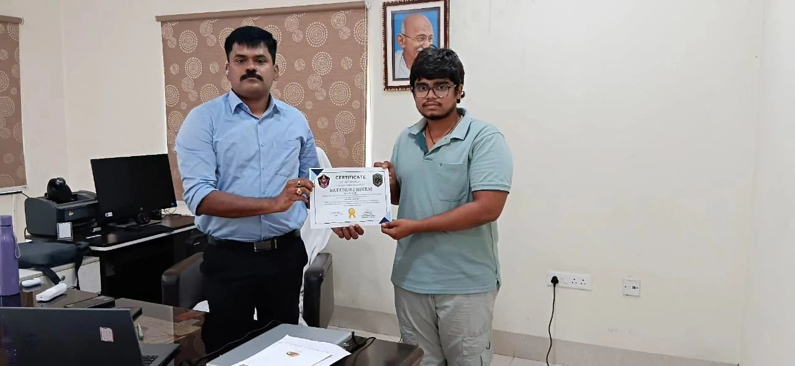

I'm a final-year B.Tech Cyber Security student at Vignan's Institute of Information Technology, Visakhapatnam, graduating in 2027. My work sits at the intersection of digital forensics, incident response, and applied AI security, from analyzing CDR/IPDR records on live cybercrime cases to building machine-learning intrusion detection systems.
Across seven internships, I've investigated real cybercrime cases with the AP Police Cyber Crime Department, monitored client endpoints with Wazuh and investigated a LockBit-branded ransomware intrusion as a SOC analyst intern, engineered client-facing security tooling for a US-based firm on night shifts, and worked on GenAI and RAG systems in applied AI research. I most recently consulted at SIRI Law LLP, bridging cybersecurity findings with legal frameworks like the IT Act and DPDP Act 2023.
I'm working toward a career in digital forensics, DFIR analysis, and cybercrime investigation, ideally with government agencies, intelligence organizations, or specialized security research teams.
Hands-on capability across security operations, forensics, offensive security, and applied AI tooling.
Seven internships spanning cybercrime investigation, SOC operations, and applied AI research, plus ongoing volunteer work.

Security tools and research published on GitHub, from DFIR write-ups and DAST automation to AI-based intrusion detection.
A public repository of hands-on security research: a first-hand forensic investigation of a LockBit-branded ransomware intrusion, with a unified attack timeline built from Chainsaw, EvtxECmd, MFTECmd, AmcacheParser, RegRipper and Plaso, plus a Wazuh integrations reference corrected from community posts that did not work as written.
Enterprise DAST automation platform for Apache Tomcat, CLI-first and CI-native, powered by OWASP ZAP. Engineered to target 15+ Apache Tomcat CVEs, integrating policy-based security gates into GitHub Actions, GitLab CI and Azure DevOps pipelines that fail builds on High/Critical findings, with authorization enforcement, PII redaction and Docker packaging.
Secret detection tool that goes beyond flagging leaked credentials: it verifies whether leaked keys are still active and enumerates real permissions (AWS IAM, GitHub scopes). Detects 17+ credential types across codebases and Git history using regex + Shannon entropy analysis, with risk scoring, remediation guidance, SARIF output, a GitHub Action and a pre-commit hook. Published on PyPI.
AI-powered Network Intrusion Detection System trained on the CICIDS2017 dataset using Random Forest and Logistic Regression classifiers, reaching 99.93% accuracy on CICIDS2017 (about 2.8M flows). Validated against the separate CICIDS2018 dataset and documented the generalization gap (77.08% accuracy, 3% attack recall), which shaped a V2 roadmap for adaptive retraining.
An end-to-end GenAI pipeline that semantically parses and ranks resumes against job requirements using LLMs, automating candidate evaluation with structured scoring and justification. Generates ranked shortlists with criteria-level reasoning, eliminating inconsistencies in manual resume review.
A Retrieval-Augmented Generation system with a 7-node LangGraph workflow, SentenceTransformers embeddings and a ChromaDB vector store over PDF knowledge bases. Intent classification and confidence-based routing escalate to a human agent when retrieval confidence falls below 35%, the user asks for a human, or no relevant context is found. Includes HLD/LLD documentation and a test suite.
Verified training and certification credentials in digital forensics, networking, SOC/AI tooling, and file & network security fundamentals.
What supervisors and mentors have said about working with me, across internships and investigations.
Praised for strong technical capability, a proactive approach to client coordination, and dependable handling of both technical and operational responsibilities across security engagements.
Recognized as a dedicated, disciplined, and highly motivated team member, with a keen eye for detail and excellent professionalism in handling sensitive digital evidence.
Recognized as sincerely committed and enthusiastic, with a keen ability to grasp and apply technical concepts, he closed out the internship with a 92.81% score across practical and theory assessments, a strong foundation for future cybersecurity and digital forensics work.
Recommended for data-protection assessment, technical documentation, and audit work across two client engagements, praised for treating client material as confidential, flagging gaps rather than guessing, and keeping legal and technical findings aligned.
Highlights from hands-on security assessments, real-world investigations, and open-source contribution.
Scored 92.81% in a hands-on security assessment during the Cyber Security & Digital Forensics Internship at Cyber Secured India, identifying and exploiting CVE-2022-26965 in Pluck CMS 4.7.16 to achieve authenticated remote code execution and privilege escalation to root.
Investigated and helped resolve a real-world cybercrime case involving a fake online betting application fraud, through digital forensics analysis at the AP Police Cyber Crime Department.
Recognized as a Contributor for both Open Source Connect India 2026 and Open Source Connect Global 2026, large collaborative open-source initiatives, for contributing security tools and automation projects.
Open to opportunities in digital forensics, DFIR analysis, SOC operations, and cybersecurity research. Reach out through any of the channels below.